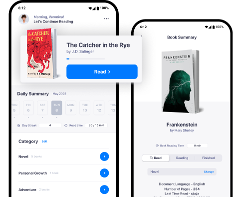

Project Overview
ReadMe is a mobile application concept designed to support readers in organizing books and building regular reading habits.
2022

ReadMe is a mobile application concept designed to support readers in organizing books and building regular reading habits.
Readers often use several separate tools to track books, save notes and monitor their reading progress.
I completed the project independently, from research and market analysis through UX design, interface design and prototyping.
Contact
If you are planning a new project or want to improve an existing one, feel free to contact me at:
marcin.zajko97@gmail.com